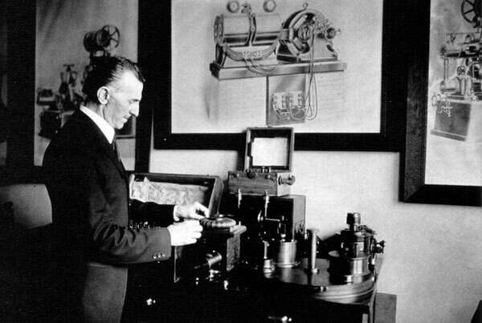

Pentru fabuloasele sale inventii din domeniu, Tesla a fost supranumit "parintele ingineriei electrice" si chiar
"parintele radioului". In 1893, Tesla a realizat primele sale experimente cu curenti electrici de inalta frecventa
si a tinut o conferinta la National Electric Light Association din St. Louis, unde a facut prima experienta
publica de radiocomunicatie din istoria omenirii. Acesta este momentul in care, dupa parerea unor specialisti,
a luat nastere radioul (telegrafia fara fir), prin transmisia unui mesaj cu ajutorul unui emitator cu scantei
de 5 kW si receptionarea sa instantanee(la o distanta de circa 10 m) cu ajutorul unui receptor cu tub Geissler.
El a construit un sistem care putea transmite si primi semnale radio de la o distanta de aproape 3 km, iar in 1907
el a receptionat prima data un semnal radio din Canada, si anume semnul "x" din Codul Morse.
Experienta facuta a demonstrat principiile fundamentale ale comunicatiei prin unde radio. De altfel, in articole si in celelalte scrieri ale sale, Tesla a descris detaliat primul sau aparat radio.
